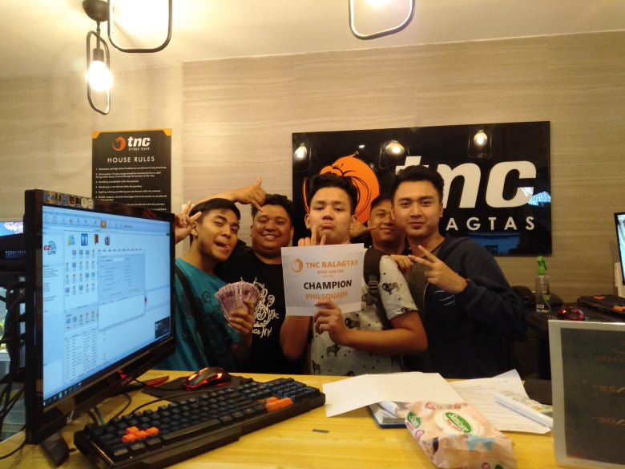

Crossfire PH
GAME PLAY
CrossFire is a free-to-play first-person shooter that features two mercenary corporations named the "Black List" and "Global Risk," fighting each other in an epic global conflict.Players assume the role of either a Black List or Global Risk mercenary, joining an online team that must work together to complete objective-based scenarios. Except for the Zombie mode and Wave mode, each mode can support a maximum of 16 players, each divided into an 8-man team.
ACHIVEMENTS
I start to play this game when i was Grade 5 then i almost play it like 5 years and in this game my current rank is Grand Mashal and i have lot of guns and VIP guns also i will show you some of my screenshots.
My Role in the team and game is: Attacker/Commander
My favorite gun type i use is: Rifle such (M4A1 and AK47)
Im also joining some tournaments and luckly i have almost 5 or more champions include my 1st champion outside batangas.
BATANGAS AREA
TNC BALAGTAS BULACAN AREA
And also because of this game i have met so many friends and this game change my life because of some people and close friends they help me some times i need help about money or what and inviting me to travel somewhere like going to cebu and manila.